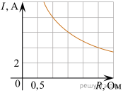
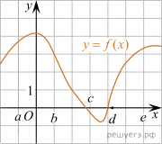
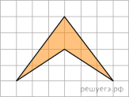
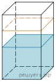
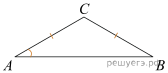
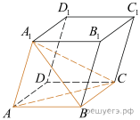
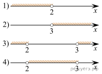

1.Установка двух счётчиков воды (холодной и горячей) стоит 3300 рублей. До установки счётчиков Александр платил за воду (холодную и горячую) ежемесячно 800 рублей. После установки счётчиков оказалось, что в среднем за месяц он расходует воды на 300 рублей меньше при тех же тарифах на воду. За какое наименьшее количество месяцев при тех же тарифах на воду установка счётчиков окупится?
Ответ:
2.Установите соответствие между величинами и их возможными значениями: к каждому элементу первого столбца подберите соответствующий элемент из второго столбца.
ВЕЛИЧИНЫ
А) объём воды в Азовском море
Б) объём ящика с инструментами
В) объём грузового отсека транспортного самолёта
Г) объём бутылки растительного масла
ВОЗМОЖНЫЕ ЗНАЧЕНИЯ
1) 150 м3
2) 1 л
3) 76 л
4) 256 км3
В таблице под каждой буквой, соответствующей величине, укажите номер её возможного значения.
| А | Б | В | Г |
Номер в банке ФИПИ: 9CDC25
Ответ:
3.Мощность отопителя в автомобиле регулируется дополнительным сопротивлением, которое можно менять, поворачивая рукоятку в салоне машины. При этом меняется сила тока в электрической цепи электродвигателя — чем меньше сопротивление, тем больше сила тока и тем быстрее вращается мотор отопителя. На рисунке показана зависимость силы тока от величины сопротивления. На оси абсцисс откладывается сопротивление (в омах), на оси ординат — сила тока в амперах. Ток в цепи электродвигателя уменьшился с 8 до 6 ампер. На сколько Омов при этом увеличилось сопротивление цепи?

Ответ:
4.
Радиус описанной около треугольника окружности можно найти по формуле
где
a
— сторона треугольника,
a
— противолежащий этой стороне угол, а
R
— радиус описанной около этого треугольника окружности.
Пользуясь этой формулой, найдите
Ответ:
5. При артиллерийской стрельбе автоматическая система делает выстрел по цели. Если цель не уничтожена, то система делает повторный выстрел. Выстрелы повторяются до тех пор, пока цель не будет уничтожена. Вероятность уничтожения некоторой цели при первом выстреле равна 0,4, а при каждом последующем — 0,6. Сколько выстрелов потребуется для того, чтобы вероятность уничтожения цели была не менее 0,98?
В ответе укажите наименьшее необходимое количество выстрелов.
Ответ:
6. Для транспортировки 45 тонн груза на 1300 км можно воспользоваться услугами одной из трех фирм-перевозчиков. Стоимость перевозки и грузоподъемность автомобилей для каждого перевозчика указана в таблице. Сколько рублей придется заплатить за самую дешевую перевозку?
| Перевозчик | Стоимость перевозки одним автомобилем (руб. на 100 км) | Грузоподъемность автомобилей (тонн) |
| А | 3200 | 3,5 |
| Б | 4100 | 5 |
| В | 9500 | 12 |
Ответ:
7. На рисунке изображён график функции y = f(x). Числа a, b, c, d и e задают на оси x четыре интервала. Пользуясь графиком, поставьте в cоответствие каждому интервалу характеристику функции или её производной.

А) (a; b)
Б) (b; c)
В) (c; d)
Г) (d; e)
ЗНАЧЕНИЯ ПРОИЗВОДНОЙ
1) производная отрицательна на всём интервале
2) производная положительна в начале интервала и отрицательна в конце интервала
3) функция отрицательна в начале интервала и положительна в конце интервала
4) производная положительна на всём интервале
Запишите в ответ цифры, расположив их в порядке, соответствующем буквам:
| А | Б | В | Г |
Ответ:
8.В городе Z в 2013 году мальчиков родилось больше, чем девочек. Мальчиков чаще всего называли Андрей, а девочек — Мария. Выберите утверждения, которые следуют из приведённых данных.
Среди рождённых в 2013 году в городе Z:
1) девочек с именем Мария больше, чем с именем Светлана;
2) мальчиков с именем Николай больше, чем с именем Аристарх;
3) хотя бы одного из родившихся мальчиков назвали Андреем;
4) мальчиков с именем Андрей больше, чем девочек с именем Мария.
В ответе укажите номера выбранных утверждений без пробелов, запятых и других дополнительных символов.
Ответ:
9.Найдите площадь четырехугольника, изображенного на клетчатой бумаге с размером клетки 1 см 1 см (см. рис.). Ответ дайте в квадратных сантиметрах.

Ответ:
10.Квартира состоит из комнаты, кухни, коридора и санузла. Кухня имеет размеры 3 м на 3,5 м, санузел — 1 на 1,5 м, длина коридора — 5,5 м. Найдите площадь комнаты. Ответ запишите в квадратных метрах.
Ответ:
11. В бак, имеющий форму правильной четырёхугольной призмы со стороной основания, равной 20 см, налита жидкость. Для того чтобы измерить объём детали сложной формы, её полностью погружают в эту жидкость. Найдите объём детали, если уровень жидкости в баке поднялся на 20 см. Ответ дайте в кубических сантиметрах.

Ответ:
12. В треугольнике
ABC AC
=
BC,
AB = 8,
Найдите AC.

Ответ:
13. Объем параллелепипеда
равен 9. Найдите объем треугольной пирамиды

Ответ:
14.Найдите значение выражения
Ответ:
15. Розничная цена учебника 180 рублей, она на 20% выше оптовой цены. Какое наибольшее число таких учебников можно купить по оптовой цене на 10 000 рублей?
Ответ:
16. Найдите значение выражения
Ответ:
17. Найдите корень уравнения
Ответ:
18. Каждому из четырёх неравенств в левом столбце соответствует одно из решений из правого столбца. Установите соответствие между неравенствами и множествами их решениями.
НЕРАВЕНСТВА
А)
Б)
В)
Г)
РЕШЕНИЯ

Впишите в приведённую в ответе таблицу под каждой буквой соответствующую цифру.
| А | Б | В | Г |
Ответ:
19. Найдите наименьшее пятизначное число, кратное 55, произведение цифр которого больше 50, но меньше 75.
Ответ:
20. Из пункта A в пункт B одновременно выехали два автомобиля. Первый проехал с постоянной скоростью весь путь. Второй проехал первую половину пути со скоростью 24 км/ч, а вторую половину пути — со скоростью, на 16 км/ч большей скорости первого, в результате чего прибыл в пункт B одновременно с первым автомобилем. Найдите скорость первого автомобиля. Ответ дайте в км/ч.
Ответ:
21.Прямоугольник разбит на четыре меньших прямоугольника двумя прямолинейными разрезами. Периметры трёх из них, начиная с левого верхнего и далее по часовой стрелке, равны 24, 28 и 16. Найдите периметр четвёртого прямоугольника.
| 24 | 28 |
| ? | 16 |